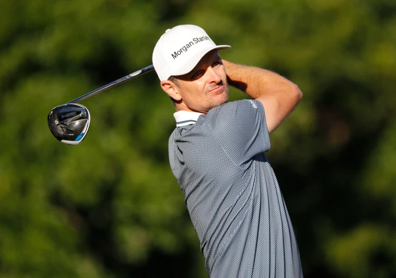

DNBC NEWS
DNBC NEWS
DNBC NEWS
JUST THE TICKET Justin Rose gets back to form in spectacular style firing seven under in brilliant round at Colonial
David Facey 11 Jun 2020, 21:21Updated: 11 Jun 2020, 22:40
JUSTIN ROSE showed the 91-day break between PGA Tour events was not all bad, as he bounced back to form in spectacular style.
The ex-world No1 was in desperate straits before the lockdown, missing the cut in three of his four starts on the American circuit and finishing outside the top 50 in the other.

But Rose clearly used the time off to sort out his problems — and fired a seven-under 63 at
Colonial to set a blistering early pace at the Charles Schwab Challenge.
The English golfer clearly relished being back at the scene of one of his finest wins.
He was only a shot off the 72-hole record as he finished 20 under par here two years ago,
powering to a three-shot victory over Brooks Koepka.
He shot a couple of 64s and two 66s that year, so this represents his lowest round at Hogan’s
Alley, named after the Texas legend who won five times at Colonial.
Rose, 39, has slipped to 14th in the world over the last 18 months.
That prompted him to end a big-money deal with Japanese club makers Honma, with almost four
years of the deal still to run.
He went back to the Taylor Made set that helped him win the 2013 US Open and Olympic gold in
2016, and his ball-striking was back to its brilliant best.
NO BOGEYS FOR JUSTIN
But it was a red-hot putter that lit the fuse for a round that contained seven birdies and no
bogeys.
In fact, everything Rose tried around the greens seemed to strike gold.
He decided to putt with a rescue club on his opening hole, the tenth, after his approach shot
finished in a fluffy lie next to the green — and nailed a 25-footer for the perfect
start.
And the 568-yard first hole saw Rose profit again from thinking differently.
He reached the front of the green in two, but was still 55 feet from the flag, with a big slope
to negotiate.
So he took out a wedge and nipped it off the putting surface, spinning his ball to four feet for
birdie No5.
It was just a pity there were no fans there to appreciate such wizardry.
Further gains at the second and third holes saw Rose finish his round with a one-shot lead over
Mexico’s Abraham Ancer and Jhonattan Vegas of Venezuela, setting a tough target for world No1
Rory McIlroy and the rest of the late starters.
Fellow Englishman Ian Poulter also hit the ground running with a 66.
He raced to four under after eight holes despite admitting he had played just three practice
rounds in the last three months.